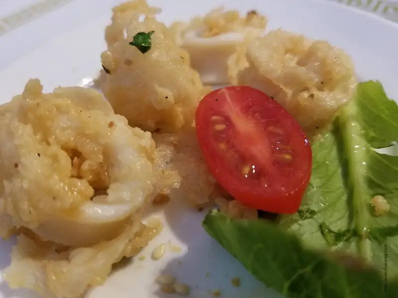
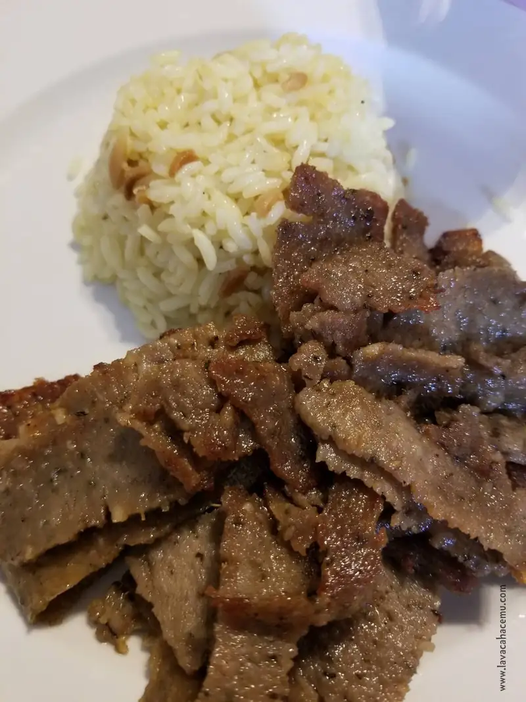
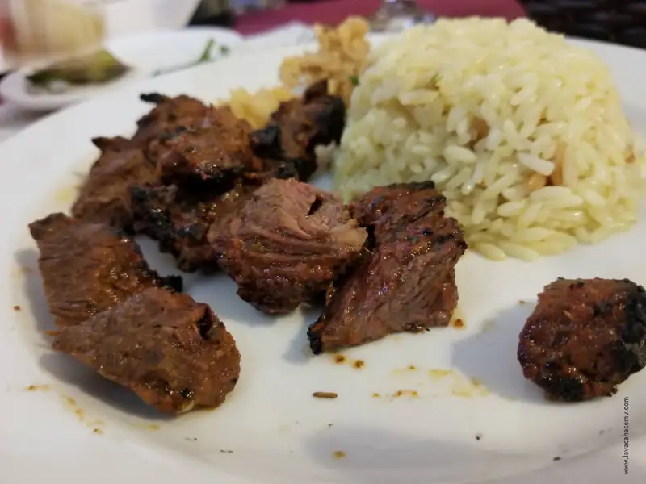
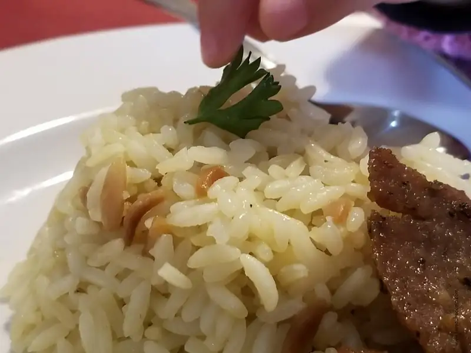
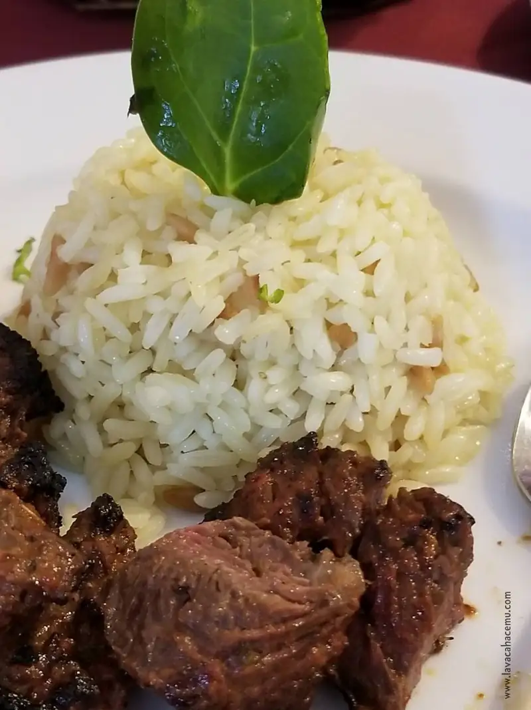
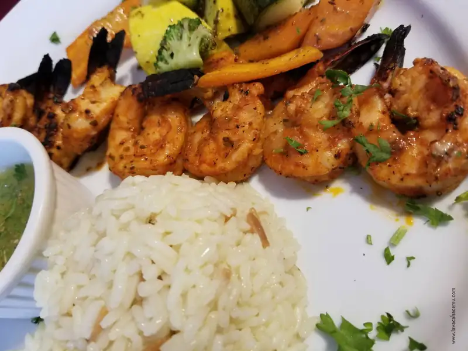
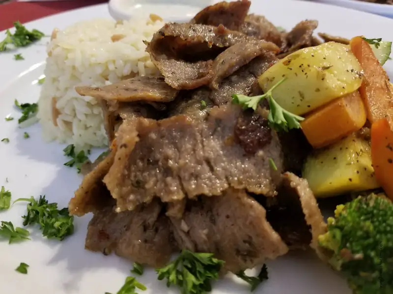
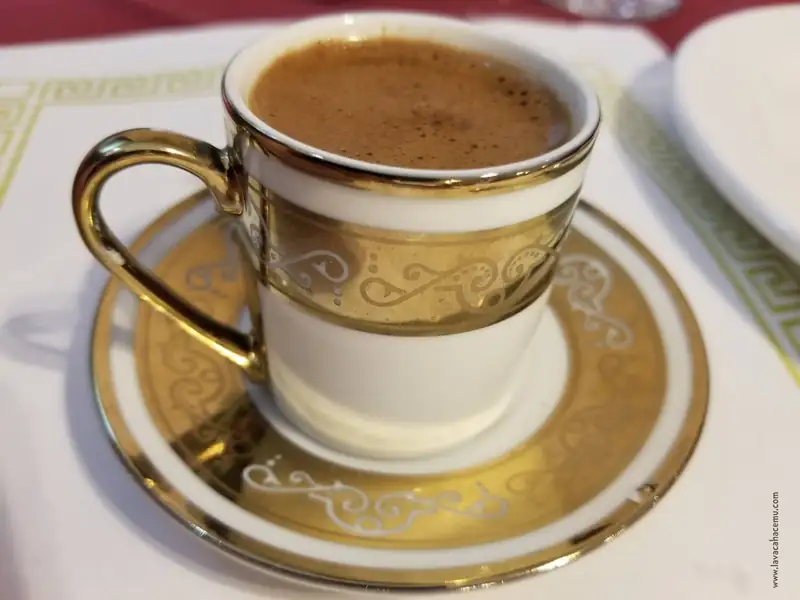
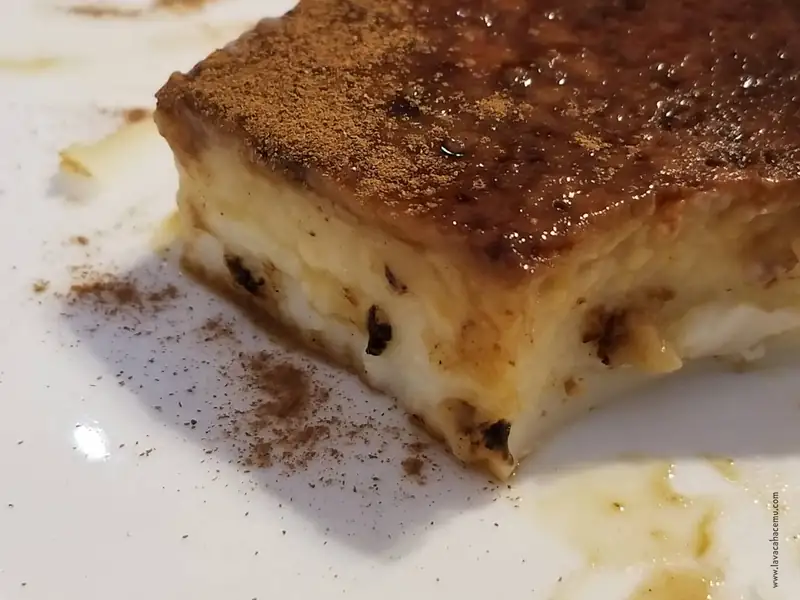

Ephesus Dallas TX Restaurantes
Pero cómo? otra sugerencia de groupon? pues... si... debo admitir que algunos lugares son un poco menos recomendables que otros, digo, uno siempre puede dudar de las razoneas por las que un restaurante o un negocio en general quisiera estar haciendo promociones a través de groupon. En el caso de este lugar parece ser porque acaban de abrir, desgraciadamente en el local donde está ya hemos visto mas de un restaurante poner su anuncio para mese después quitarlo... esperemos que este restaurante esté destinado a muchos años porque está muy bueno como para que lo quiten luego luego.
En fin, en nuestra primer visita estos son los platillos que pedimos:
Calamari fritti - debo admitir que son pocas las veces en que no pedimos calamares si están en el menú.

{kind=link}
Para la primogénita una orden de shish de res, que es algo así como el abuelo palestino/mediterráneo de los tacos de pastor/adobada en México

{kind=link}
Kebab de res básicamente una brocheta de carne sazonada, muy, muy buena; al grado que esto es lo que voy a querer pedir la siguiente vez que vayamos.

{kind=link}
Las órdenes vienen con arroz pilaf.

{kind=link}
No, no todas traen espinacas, pero pues algo aprenden las crías de sus padres ;)

{kind=link}
Y el kebab de camarón tambien, po. ca. madre.

{kind=link}
Más shish, pero.. el de adulto, con verduras asadas

{kind=link}
El café turco NO DEBE FALTAR

{kind=link}
Y para el postre: kazandibi, que es un flan turco que al menos ellos lo hacen mas denso de que que los mexicanos hacemos el flan.

{kind=link}
Ephesus resultó ser un lugar muy agradable donde la comida cumplió nuestras expectativas y más. El servicio es amable y se esmeraron por hacernos sentir como en casa.